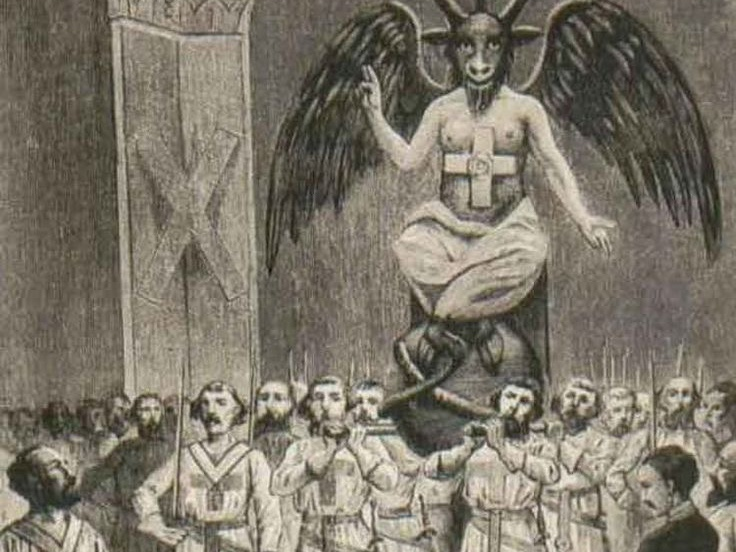

정치 · 역사 아카이브

프리메이슨
자세히 보기고위 정치인과 유명 인사들이 이 조직의 일원이라는 설이 존재하며, 세계 금융, 미디어, 전쟁에도 개입했다는 주장이 끊임없이 드러나고 있다.
프리메이슨은 단순히 비밀 결사일까, 아니면 세계를 조종하는 그림자 권력일까?
#비밀결사 #권력구조 #그림자정부
히틀러 생존설
자세히 보기1945년, 베를린에서 자살했다고 알려진 히틀러. 하지만 그의 시신은 확실하게 공개되지 않았고, 아르헨티나 등지에서 생존했다는 주장이 오랫동안 이어져왔다.
이는 역사의 끝이 아닌 은폐였을지도 모른다.
#히틀러생존 #제3제국 #전후미스터리

일루미나티
자세히 보기세계 단일정부를 만들려는 비밀 조직 '일루미나티'.
국제 정치, 경제, 대중문화에 이들이 영향을 끼치고 있다는 주장은 프리메이슨과 얽혀 현대 정치의 은밀한 구조를 드러낸다.
#일루미나티 #조작 #신세계질서